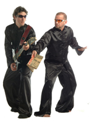

Tristan Bernard
Miradas

Poesía + Música + Video
Carito es la voz cantante del proyecto poético-musical surgido en Natal en 2003. Y quizás es por eso que se puso la entrevista al hombro y contestó las preguntas que le hicimos llegar desde ESTO NO ES UNA REVISTA. Conociendo el paño, con el aval de Edu Gómez, socio y otra mitad esencial de Os Poetas Elétricos.
Al finalizar la entrevista, publicamos el manifiesto del dúo, el cual decidimos mantener en portugués debido a la complejidad de su escritura, sus palabras inventadas y sus juegos literarios.
Después sostener una banda de rock durante más de una década, retomaron el proyecto Poemas Eletri-Ficados & Outros Que Foram Embora donde, desde su bautismo, están presentes la música, la poesía y los juegos de palabras. ¿Cómo fue el tránsito desde una apuesta rocker hacia el riesgo de trabajar con registros poéticos y musicales?
La época de Modus Vivendi (años 80 y 90, en Natal) fue muy fértil y creativa, pero también de muchas dificultades, por ejemplo hacer un registro musical, ya que en ese entonces sólo existían eran los discos de vinilo, los LP (Long Play). A mediados de los 90 tuvimos la necesidad de trascender lo que estábamos haciendo. Experimentar cosas nuevas, con el espíritu y la actitud del rock pero, al mismo tiempo, libres del rock. Yo ya era poeta (escribo desde que era un niño) y Edu ya investigaba otros sonidos, otros instrumentos, al tiempo que se interesaba por en la música electrónica. Y entonces juntamos todo eso. Incluso en Modus Vivendi comenzamos a realizar algunos experimentos en esa dirección. Pero queríamos más. Más libertad, más creación en el sentido de explorar otros sentidos. Entonces empezamos a desarrollar un proyecto paralelo con el nombre inicial de Poemas eletri-ficados e outros que foram embora (que terminó siendo el nombre del primer CD de Os Poetas Elétricos). Edu Gómez era socio de una productora de publicidad y un estudio de grabación de jingles. Así que cuando el estudio estaba libre, en la madrugada, hacíamos nuestros experimentos de mezclar música y poesía. En 1999, disolvimos Modus Vivendi. Yo me fui a vivir a Praia de Ponta do Mel, una región virgen, desértica, salvaje, en la frontera de Rio Grande do Norte, en Ceará, una especie de "África Brasil" - la región de la Costa Blanca. Y desarrollé, durante casi 10 años, un proyecto pionero del ecoturismo que ganó varios premios. Fue una experiencia increíble en un lugar mágico donde también podría absorber la poética del espacio interior de la mezcla con el mar. Edu dejó otra banda e, la que participaba (una banda de blues llamada Mad Dogs) y vivió en una granja familiar, cerca de otra playa en Rio Grande do Norte. Así que nos alejamos de la escena musical de la ciudad y nos exiliamos en la naturaleza, aunque seguíamos siendo amigos y nos hablábamos por teléfono. En 2003, sentimos una especie de "síndrome de abstinencia artístico" y hablamos acerca de nuestra necesidad de volver al arte, de lo que habíamos hecho en nuestras vidas, en términos de arte y música, y sentimos que lo que más nos atraía era aquel proyecto paralelo experimental que mezclaba música y poesía con una gran libertad de expresión. Rescatamos las grabaciones experimentales, las pasamos a un nuevo formato, añadimos cosas,hicimos nuevas grabaciones ... Y, por último, como se dice aquí: "le tomamos el gusto" de nuevo. .. Y estábamos grabando, casi sin darnos cuenta. Al hacer y rehacer esas grabaciones por puro placer, sin saberlo también, estábamos grabando nuestro primer CD. Creemos que fue el disco el que se hizo, que el disco el que se nos apareció a nosotros. Como si dijera: "¡Mira! Estoy aquí ". Así que nos pusimos de acuerdo para hacer el disco sin tener que preocuparnos por complacer a nadie, salvo a nosotros dos.
¿Cómo se incorpora la imagen a la estética de Os Poetas...?
Un bello día de 2009 iba conduciendo, con un amigo, pasando por la playa de Tabatinga, en el mar y vimos un barco que nos llamó la atención; un barco que parecía de película. Más tarde nos enteramos de que el barco estaba a la deriva y que encalló varios días después en la playa de Buzios. Escuchamos la noticia y fuimos a ver el barco varado, e inmediatamente me acordé de la película Terra Estrangeira de Walter Salles. También me acordé de la poemúsica Estirado no Estirâncio, de Os Poetas Elétricos. Hacía tiempo que quería hacer un video para esta nuestra poemúsica (esa poemúsica nuestra ya había diseñado así: de manera cinematográfica. Desde el inicio "pedía" un videoclip musical. ¡El arte habla!). Escribí el guión, se lo envié a Carroll por correo electrónico, invitándola a participar en el proyecto como actriz. Y aceptó. Y luego aceptaron participar George Câmara y Julio Castro. Y entonces me las arreglé para encontrar un día en el que todos pudieran estar. El guión tenía varios tratamientos: antes, durante y después de filmar. Me gusta trabajar de una manera abierta, con el guión sólo como un punto de partida. Creo que es bueno entender el papel del director como un provocador, un promotor de las situaciones. Lo leí una vez en el sitio Contracampo, donde Felipe Furtado escribió sobre la película Diez de Abbas Kiarostami: "La tarea del director parece ser mucho más que el promotor de una situación"... Trazamos el plan de rodaje, y en sábado ambiguo, con sol y nubes, hicimos nuestra tarea. Grabamos todo en un día. Un equipo mínimo, una sola cámara, un jeep, y mucha disposición. Filmamos la salida del sol en Buzios, donde filmamos las escenas del barco; luego se dirigió inmediatamente a Malemba para rodar las escenas de la geografía del desierto y disfrutar del resto de la suave luz de la mañana. Y regresamos a Sao Miguel do Gostoso, con el tiempo apretado para aprovechar la luz del atardecer. Luego, armamos el rompecabezas con Julio Castro, con el apoyo de Vlamir, de Ícone Estúdio, del sello Mudernage. Vlamir es un Don Quijote eterno y Julio hace la diferencia. Es un as en el tema. Es tranquilo y moderno, tiene una amplia experiencia con el video arte, video instalación, y es un VJ de Los Poetas eléctrica mucho tiempo. Y me gustaría que el vídeo contemporáneo. Tenemos una gran afinidad audiovisual. Por otra parte, disfruto mucho de las referencias antiguas que son, en realidad, intemporales. Además de la cita explícita de Terra Estrangeira, tuve influencia -de alguna manera-, de películas como Nostalgia, de Andrei Tarkovski; París, Texas, de Wim Wenders; Arcaico Agrícolas, de Luiz Fernando Carvalho; y, en especial, de la poética espacial del cine de Antonioni, de quien soy fan.
¿Cómo es el modo de trabajo de Os Poetas Elétricos?
Completamente libre, sin fórmulas, sin ataduras. ¡Cualquier cosa puede suceder! ¡Todos se mixtura! Edu Gómez y yo tenemos una hora fijada para componer, para crear y funciona así, desde hace mucho tiempo. Lunes a las 19 horas, por ejemplo. Comenzamos de la nada y al final de la noche, al amanecer tenemos uno o más trabajos creados. En esa hora nos desprendemos de todo y, a partir de la nada, de un vacío fértil, nos entregamos a un viaje, al poder de la imaginación sin límites, hacia lo desconocido, lo nuevo, al placer de descubrir. Nuestro hacer es rehacer.La mayor dificultad es abandonar el trabajo. Y entonces llega un momento en el que la criatura se llena de vida, independientemente del creador. Y sólo podemos empezar de nuevo. Procuramos transformar vida y arte, el arte en vida. No tenemos objetivos: ¡tenemos subjetivos! Con Edu Gómez somos compañeros desde 1987, sentimos un gran placer en crear juntos, tenemos una química fuerte, una máquina de creación bien aceitada y aceptada, una sed de crear, una sed nueva, una sed de lo nuevo, que se renueva siempre.
Brasil ha tenido grandes creadores en poesía y música, ¿qué libros y qué discos de otros colegas circula en las manos de Os Poetas Elétricos?
Cualquier disco, a condición de que sea un platillo volador (*) y cualquier libro que sea un instante antes que permanecer en un estante... De la escena musical brasilera actual, a mí particularmente, me gustan mucho Otto, Céu, Cibelle, Maquinado, Cidadão Instigado... Y en poesía, Paulo Leminski, Chacal, Alice Ruiz, Cacaso, Francisco Alvim, Nicolas Behr, Ana Cristina Cesar, Arnaldo Antunes, Marize Castro, Ada Lima...
(*) NdelT: "disco voador", literalmente disco volador, es la expresión portuguesa para el plato volador u OVNI
Mensagem-manifesto d'Os Poetas Elétricos
UMA (n)OVA MÁQUINA DE CHOCAR POEMAS
Os personas agem e surgem os personagens. Do nada. Ou melhor, do vazio fértil. Como diz Beckett: nada é mais real do que nada. E nessa nova lógica, sujeitos, a tudo, são criados de pedaços de pa-lavras amigas, respirando todo o ar-djetivo ativo, separando sílabas, colando fragmentos, criando vida de excrementos, adubo de novas pa-larvas. Sementes de NEON-logismos, aliteraSONS, desconstruSONS, trocadilhos, rimas que rumam em um jogo de palavras para contos e barrancos. Humor e amor, crônicas irônicas, líricas satíricas. Assim são - e loucos - os poemas eletri-ficados. E outros que foram embora. Também pegando carona nas velhas palavras, pela estrada aflora toda uma nova fauna lúdica antibélica de/com textos ainda por surgir na trilha sonora popsicodélica. Numa teia de arranha-sons, a poesia capta-tece-tura os sem-tons, pois "sobras e restos nos interessam" – erros, falhas, tralhas, filhas das trilhas, músicas ácido-dentais, unidades habitaSONais, defeitos especiais, participações espaciais... Tudo tão simples e tão samplers!!! Por que não pensei disso-n’antes? Sons Alien’atórios são sempre bem vindos ao nosso sanatório poético-musical. E nos deixam de caso com o acaso, nos concedem um viso para o improviso, e um aviso: não estamos sós! Para qualquer parte, qualquer marte, a arte é dona de si, dna de si, faça dó ou faça sol. E nos mostra os caminhos sustenidos, acima do bem e do bemol.
Picassoar nas palavrasons..........................................................................Para brincar como crianças.